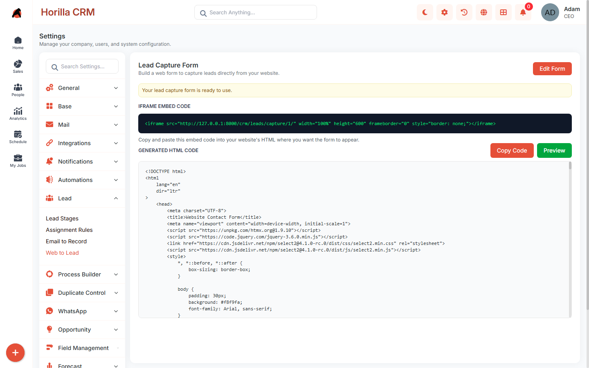

1. Introduction
- Web to Lead lets you capture leads from any external website.
- You build the form inside the CRM and embed it on your site.
- Each submission automatically creates a Lead record, and visitors do not need to log in.
2. Access Web to Lead
-
Go to Settings → Lead → Web to Lead. The page title is Lead Capture Form. The description is
Build a web form to capture leads directly from your website.

3. Configure the Form
Form Heading
Enter a Form Name, which is shown as the form's title.
Select Fields
- Click fields in the left panel to add them to the form.
- Remove a field with the remove icon.
- The preview updates instantly.
- Common fields: First Name, Last Name, Email, Phone, Company Name.
After Submission
Choose what happens once a visitor submits the form:
- Success Message – shows a custom message on the same page.
- Return URL – redirects the visitor to another page, such as a thank-you page.
Language
Choose the form language: English, Arabic, German or French.
Lead Owner
Select a user. All leads captured through this form are assigned to that user.
Form Color
Choose a Header Color to match your brand.
Save
Click Generate to to apply the configuration.
4. Embed the Form
After saving, the system generates a public URL in this format:
https://yourdomain.com/leads/capture/<form_id>/
You can then:
- Share the link directly.
- Embed it on your website with an
<iframe>.
How Lead Capture Works
When a visitor submits the form:
- A new Lead is created in Horilla CRM.
- Lead Source is automatically set to
Website. - Lead Status is set to the first active pipeline stage.
- Lead Owner is assigned according to the form settings.
- The visitor sees the success message or is redirected.
Additional Recommendations
- Keep the form short; too many fields can reduce submissions.
- Use clear labels, and mark fields as required only when necessary.
- Match the form's colours and wording to your website's branding.
- Test the form after embedding it to confirm leads are created correctly.
- Review captured leads regularly to maintain data quality.